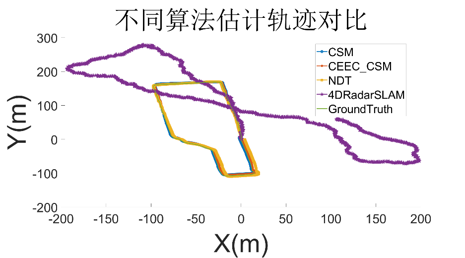
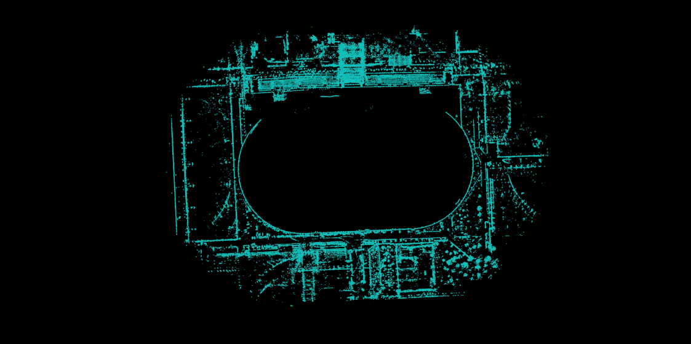
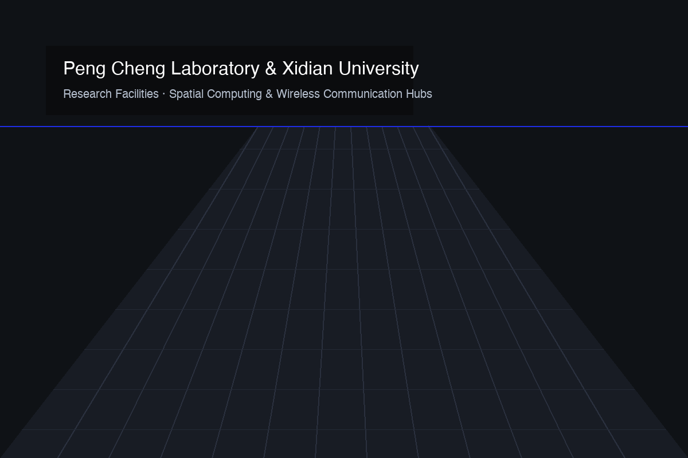

在未知中定位，在现实中构建
我是朱军（Stephen Zhu），西安电子科技大学与鹏城实验室联合培养博士研究生。我的研究聚焦机器如何在未知环境中自主定位与感知：从毫米波雷达 SLAM、无线电地图构建，到三维场景重建。
定位不只是坐标读数，更是机器持续理解复杂现实世界的方式。我长期关注非视距遮挡、坐标系变换误差与大视场环境构图等核心问题。
聚焦移动智能体在未知环境中的同步定位与建图，探究毫米波雷达观测偏差与非线性坐标变换对累积误差的影响机理，提出闭式期望误差补偿理论。实测降低误差约 49%。
针对城市峡谷等严重非视距环境，基于射线追踪构建融合到达角、时延与信号强度的精细无线电指纹地图，突破米级终端定位精度。
探索多源多传感器信息融合的三维几何重建，结合前视与侧视雷达生成大视场鸟瞰图（BEV），为极端环境下的灾中监测与自主导航提供空间几何支撑。

Small-Scale Radio Map-Based NLoS Localization
论文通过高保真射线追踪构建了包含到达角（AoA）、仰角（EoA）、时延（ToA）与接收信号强度（RSS）的小尺度无线电地图（如右图所示各特征层），结合 KNN 匹配在复杂城市峡谷非视距环境下实现米级定位。特征消融实验证实方位到达角与时延对定位精度起主导作用。

Compensation for Positional Errors in MMW Radar SLAM Caused by Observation Deviations and Coordinate System Transformation
论文揭示了坐标系非线性变换改变观测分布、使雷达 SLAM 定位误差沿特定轴向累积的内在机理。提出累积误差期望补偿算法 CEEC-CSM，右图为实测场景中 CSM、NDT、4DRadarSLAM 与 CEEC-CSM 的估计轨迹对比，验证了算法将累积误差降低约 49% 并紧密贴合真实轨迹。

Urban Underground Road Panoramic Monitoring System · Multi-Sensor Radar SLAM
负责前视与侧视毫米波雷达 SLAM 算法的软硬件部署，融合轮速里程计与雷达位姿估计结果；基于多传感器观测构建大场景高精度雷达点云地图（右图为实测雷达点云建图效果），为地下密闭通道灾中目标检测与救援调度提供空间几何建图支撑。

本交互实验复现了我发表于 IEEE TIM 2025 的核心理论：调节雷达观测角偏差 Δθ，实时对比未补偿的标准 CSM 累积漂移与期望补偿方法 CEEC-CSM 的轨迹收敛效果。
公式依据：坐标变换期望补偿模型 E[ΔX] 与闭式扫描校准矩阵求解。
系统而扎实的通信与信息工程培养，从理论研究到国家级实验平台攻坚，持续拓展机器自主定位与感知的边界。
信息与通信工程 · 导师：承楠教授（西电）、杨婷婷教授（鹏城）
立足国家战略科研平台，深入开展毫米波雷达 SLAM、高精度小尺度无线电地图及三维环境重建研究；已录用 IEEE/CIC ICCC 2026 第一作者论文。
信息与通信工程 · 北京 · GPA 3.86/4.0
深入研究雷达侧视观测模式下的 SLAM 位姿误差机理，在 JCR Q1 顶刊 IEEE TIM 发表学生一作成果；获“大唐杯”全国大学生移动通信应用创新大赛省部级二等奖、中国“互联网+”创新创业大赛校级一等奖。
通信工程 · 电子信息与通信系统基础
完成通信理论与信号处理基础训练，确立以移动定位、空间测量与自主导航为核心的长期学术志趣。

欢迎围绕毫米波雷达 SLAM、无线定位技术及三维场景重建探讨科研合作或学术问题。
如果你对我的论文方法、实验数据或学术合作方向感兴趣，随时欢迎来信交流。